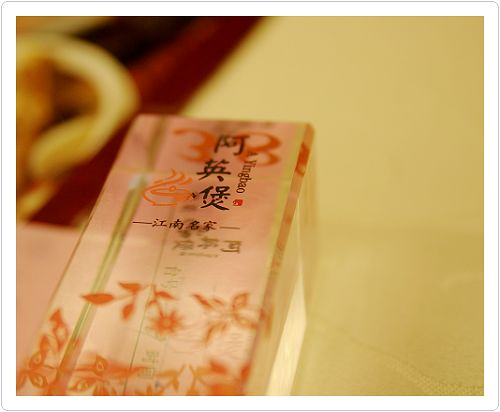
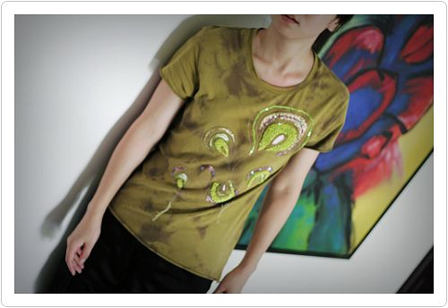

招牌菜 @ Jul 31, 2009
某晚在阿英煲吃饭，失望而归。
猪尾烧黄豆是阿英煲的招牌菜，除了甜之外没品出别的滋味。南京杭邦菜做的好的应该还是张生计。我父亲是无锡人，也不会给菜里放那么糖。几乎上来的每道菜都是甜的，不是厨师味觉有缺陷，就是厨师低估了客人的味觉需求。排队等翻桌还特别多，里面吵得要死。环顾四周，80%吃相惨不忍睹......不走运啊，不走运。
服务生：“因为糖非常便宜，他们就死放。”
“打包盒要收费吗？”我问。
“不收费，不过放心饭店肯定是赚回来的。”
“你怎么不帮自家饭店说话啊？”
“我打暑期工，月底就走。”服务生一脸轻松。


午饭准备了三个菜，烧饭汗流浃背，吃饭一转眼功夫，真让人惆怅！至少得用烧饭同样的时间来吃饭才让人得到些安慰吧？想想父母烧饭时，我是爱吃不吃，时常还用勉强的表情咀嚼饭菜....真是不懂事！现在恨不能每个吃饭的人，面露享受和感激之情。

一周的休闲装，REPLAY体恤+LA PARGAY缎面7分裤+昨天的凉鞋。

20 Responses to “招牌菜”
2009-07-31
那些通通是甜的？我怕吃甜的，从小不爱吃
2009-07-31
没想到，没想到。。。还是在家吃好，今天中午我又失败而归，看着店里人头攒动，不晓得原因出在哪一边。
2009-07-31
中午你去哪里FB的？甜的也可以，但同一时间所有食品都是甜的，那真是腻死人不偿命！
2009-07-31
那个 默默看了好久你的博克,想链接到自己博克上,不知可否?
你上豆瓣吗?很喜欢你的文和你的狗狗:)
2009-07-31
连接您请便；
不上豆瓣；
狗狗借你玩：D
2009-07-31
鬼佬的饮食褒贬兼有，但是其进餐的方式还是很令我推崇的。首先无论餐饭的简繁，table setting总是赏心悦目；一杯红或白葡萄酒，光是那宝石一样的颜色就十分养眼了，何况还能不知不觉地放缓进餐的速度，因为轻尝浅啜间交谈一下是再自然不过的事情了，如果是一个人进餐，酩一下醇酒自然能够有效地切断狼吞虎咽的进程；最后，各自分食，我觉得是件颇从容和优雅的举动，避免了所有的筷子在一个盆里搅和还连带着滴滴答答一路留下狼藉。每一天再普通不过的居家生活也是应该有一点姿态的。
还有。。。题外话。。。这个服务生很雷人。。。
2009-07-31
的确很雷人，之前还遇到个更雷人的，有机会再写。
鬼佬工作日的午餐不会喝葡萄酒吧？
BTW，瞧瞧，你写的多好啊，开博吧~
2009-07-31
6F中文还是这么好，开博！
2009-07-31
一般当然是不喝的。不过如果偶尔周五或正逢某人辞职晋升等等同事一起出去午餐，还是有喝的。
不禁想到视美酒为生活重要元素之一的法国人，居然在前不久研究出来每天一杯红酒不仅不能有益健康，而且可以致癌。尽管有些法国人可能会对此嗤之以鼻，但是选择相信这一研究的法国人呢，是否心怀对美食的崇敬却又如坐针毡？
看过动画片么? 一只热爱烹饪的老鼠,很有意思的,正适合我们这个话题.
2009-07-31
阿英煲的价格倒不贵，那猪尾巴我也吃过，没啥感觉，冷了后更无法入口，其实味道倒还是其次，关键是坏境从外面看很好，里面吵得受不了
2009-07-31
07年的的片子，还没看，碟子倒是买了，很小农吧？不过我有张该片的立体画，蛮大的尺寸，找机会SHOW给你看看，很FUN~
印象中每天一杯红葡萄酒对女性很有益处，致癌之说倒是才听说。中国人喜欢来二两老白干加三两猪头肉，不怕不怕~呵呵~
2009-07-31
小农…你指….?
你看完了告诉我整片最让你触动的是什么… 我嘛 — 一是最后那个美食家的一段话,还有就是那只老鼠早上煎鸡蛋的那一刻 … 呵呵! : )
2009-07-31
那个小老鼠嘛，看过了，其实剧情还是很老套的，原版配音可能好的多
2009-07-31
好看的片子啊。开场白就很逗，当听到小米说“This is me. I think it’s apparent that I need to rethink my life a little bit. What’s my problem? …就想笑了。不过，是不是真的“anyone can cook”呢？
2009-07-31
那个鸡汤，我都流口水了。
2009-08-01
甜的菜好像光口吃还行，配饭吃就受不了了。鸡是土鸡吧，汤那么黄，看着就想喝：）
2009-08-01
不知道你们试过那个beetroot没有？紫红色，甜甜的，很好吃，还有点红酒的味道，特别是放在色拉里面配上橄榄油和红醋。
2009-08-01
beetroot没试过哎，你一般用什么品牌的beetroot呢？下回试试哦~
2009-08-03
Hey, Miss Tea, please remember not to give Luke chicken bones. Chicken is good for dogs but not the bones. very dangerous. Dogs can have pork bone, lamb bone or beaf bone…
2009-08-04
只要有骨头一般都会把肉剔下来给狗狗吃，我一定会小心的~~~
Leave A Reply
存档只读，评论已关闭。